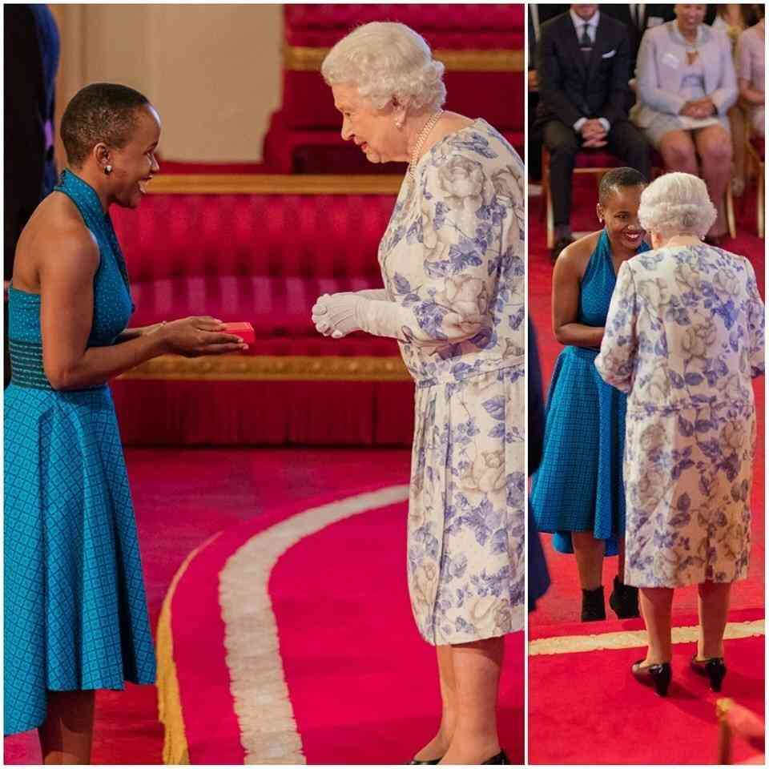

Achievements
Awards and Honours
She has been awarded in faculty for the future fellow in 2014 and 2015 which is an award fellowship to women from developing and arise economies to follow phD studies in science,technology,engeneering and mathematics disciplines at leading universities world wide.
Tsabi Molapo is a 2VVLead Fellow.Across the world and more dramatically in developing countries, women lack access to economic, social and educational opportunities, and have difficulties achieving their full potential because of a non-enabling environment that poses political, cultural, social, and institutional barriers to their growth. The VVLead Fellowship represents an effort to support women leaders who are committed to eliminating these barriers in their countries and around the world.
In 2013, she was awarded an educational grant by The Margaret McNamara Memorial Fund. The World Bank affiliated grants are offered to women in Southern Africa, who have a service record and demonstrated commitment to improving the lives of women and/or children in their countries or other developing countries.
After the successful completion of her MSc research, she received a grant from Nokia Research Africa awarded to support the expansion of our research on 'The Use of Digital Media to Train Low Literacy Health Workers in Lesotho.'
After the successful completion of Tsabi MSc research, she received a grant from Nokia Research Africa awarded to support the expansion of our research on 'The Use of Digital Media to Train Low Literacy Health Workers in Lesotho.'

Tsabi Molapo Finalist of the The 2012 Access Innovation Prize, under the Grassroots Technology category. This award seeks to reward the best actionable ideas on the use of information technology to promote and enable human rights and deliver social good.
In 2012, she was awarded the Google Anita Borg Memorial scholarship, a scholarship awarded by Google Inc. to female students based on their excellent academic performance, leadership experience, and passion for Computer Science.
Tsabi's MSc was undertaken as a Mandela Rhodes scholar. The Mandela Rhodes scholarship is awarded to young Africans who exhibit academic prowess as well as broader leadership potential. The scholarship includes access to leadership development programmes rooted in the principles of leadership, education, entrepreneurship and reconciliation;
She is a fellow of the Moremi Initiative for Women's Leadership in Africa, a program that identifies young African women with potential and passion for transformational leadership, selected according to criteria that include demonstrated leadership potential, service to their community, and commitment to women's empowerment.
 =======
=======